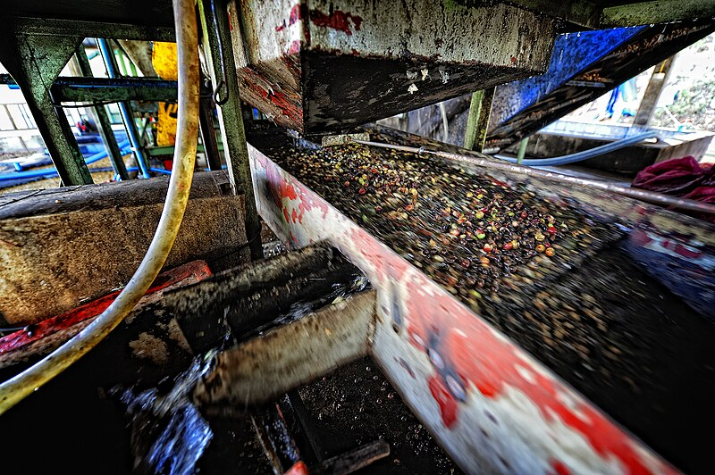

.jpg)
The very first step is cultivation.

Sorting and drying of the beans.
Here we notice change in color of the beans,all turn to black
CULTIVATION
A coffee bean is actually a seed. When dried, roasted and ground, it’s used to brew coffee. If the seed isn’t processed, it can be planted and grow into a coffee tree.
Coffee seeds are generally planted in large beds in shaded nurseries. The seedlings will be watered frequently and shaded from bright sunlight until they are hearty enough to be permanently planted. Planting often takes place during the wet season, so that the soil remains moist while the roots become firmly established.
Harvesting the Cherries
Coffee cherries on the treeDepending on the variety, it will take approximately 3 to 4 years for the newly planted coffee trees to bear fruit. The fruit, called the coffee cherry, turns a bright, deep red when it is ripe and ready to be harvested.
There is typically one major harvest a year. In countries like Colombia, where there are two flowerings annually, there is a main and secondary crop.
In most countries, the crop is picked by hand in a labor-intensive and difficult process, though in places like Brazil where the landscape is relatively flat and the coffee fields immense, the process has been mechanized. Whether by hand or by machine, all coffee is harvested in one of two ways:
Strip Picked: All of the cherries are stripped off of the branch at one time, either by machine or by hand.
Selectively Picked: Only the ripe cherries are harvested, and they are picked individually by hand. Pickers rotate among the trees every eight to 10 days, choosing only the cherries which are at the peak of ripeness. Because this kind of harvest is labor intensive and more costly, it is used primarily to harvest the finer Arabica beans.
A good picker averages approximately 100 to 200 pounds of coffee cherries a day, which will produce 20 to 40 pounds of coffee beans. Each worker's daily haul is carefully weighed, and each picker is paid on the merit of his or her work. The day's harvest is then transported to the processing plant.
SORTING THE BEANS
Once the coffee has been picked, processing must begin as quickly as possible to prevent fruit spoilage. Depending on location and local resources, coffee is processed in one of two ways:
The Dry Method is the age-old method of processing coffee, and still used in many countries where water resources are limited. The freshly picked cherries are simply spread out on huge surfaces to dry in the sun. In order to prevent the cherries from spoiling, they are raked and turned throughout the day, then covered at night or during rain to prevent them from getting wet. Depending on the weather, this process might continue for several weeks for each batch of coffee until the moisture content of the cherries drops to 11%.
The Wet Method removes the pulp from the coffee cherry after harvesting so the bean is dried with only the parchment skin left on. First, the freshly harvested cherries are passed through a pulping machine to separate the skin and pulp from the bean.
Then the beans are separated by weight as they pass through water channels. The lighter beans float to the top, while the heavier ripe beans sink to the bottom. They are passed through a series of rotating drums which separate them by size.
ROASTER
Roasting transforms green coffee into the aromatic brown beans that we purchase in our favorite stores or cafés. Most roasting machines maintain a temperature of about 550 degrees Fahrenheit. The beans are kept moving throughout the entire process to keep them from burning.
When they reach an internal temperature of about 400 degrees Fahrenheit, they begin to turn brown and the caffeol, a fragrant oil locked inside the beans, begins to emerge. This process called pyrolysis is at the heart of roasting — it produces the flavor and aroma of the coffee we drink.
After roasting, the beans are immediately cooled either by air or water. Roasting is generally performed in the importing countries because freshly roasted beans must reach the consumer as quickly as possible.
GRINDING
The objective of a proper grind is to get the most flavor in a cup of coffee. How coarse or fine the coffee is ground depends on the brewing method.
The length of time the grounds will be in contact with water determines the ideal grade of grind Generally, the finer the grind, the more quickly the coffee should be prepared. That’s why coffee ground for an espresso machine is much finer than coffee brewed in a drip system.
Espresso machines use 132 pounds per square inch of pressure to extract coffee.
We recommend taking a moment to examine the beans and smell their aroma — in fact, the scent of coffee alone has been shown to have energizing effects on the brain.


.jpeg)